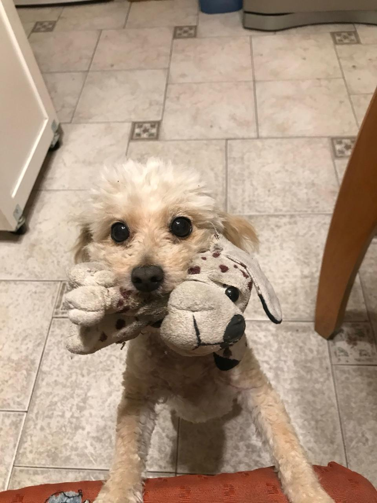

Alma
Alma es una caniche de 14 años. Ya está muy viejita y nos acompaña desde hace muchísimo tiempo, al igual que Luna (mi primera caniche blanca que falleció de vejez).
- Raza: Caniche.
- Edad: 14 años.
- Rutina diaria: Dormir y descansar en lugares cómodos.
- Cuidado: Mantenerla tranquila y cómoda en casa.


Día a día
Por su edad avanzada, durante el día no hace mucho esfuerzo ni tiene tanta actividad. La mayor parte del tiempo busca lugares calentitos para dormir. En casa intentamos cuidarla mucho para que pase sus días lo más tranquila posible.
← Volver al inicio